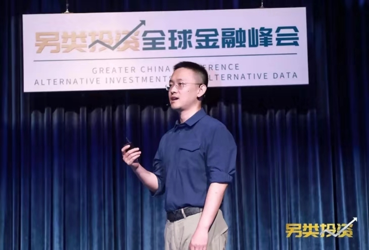

Home EventsSource:GTCOMDate: 31 July 2019views:29
The Greater China Conference Alternative Investments & Alternative Data officially kicked off in Beijing on July 30th and 31st, 2019, welcoming industry elites and media guests from finance, technology and other fields. Focusing on hot topics such as fintech, alternative investment and big data, the guests discussed new industry trends in the integration of finance and emerging technologies.
▲ Site of Greater China Conference Alternative Investments & Alternative Data
Eric Yu, the CEO of Global Tone Communication Technology Co., Ltd. (GTCOM), Lyu Shijie, the chairman of ZhongJinPuHui and Chairman of CUFE Culture and Finance Research Center, and Vidak Radonjic, the CEO of Berry Consultants LLC (Berry Consultants) delivered speeches, respectively. During the two-day conference, almost 100 distinguished guests from highly respected institutions such as PICC, BOC International, Harvest Fund, JPMorgan, MSCI and S&P Global exchanged views on hot topics in the financial and technological fields at 13 theme forums, presenting a veritable feast of fintech.
Industry leaders at home and abroad work together to seize the commanding heights of fintech

▲ Eric Yu, CEO of GTCOM, delivers a speech
As the conference opened, Mr. Yu explained the trends in financial investment by delivering a speech entitled "Alternative Data: New Air for Fintech." Quantitative financial investment and alternative data are getting more and more important, while the latter is more important in the strategy of quantification. The number of alternative data companies increased from 200 in 2012 to 400 in 2018. Meanwhile, fund companies have increased their investment in alternative data year by year. Thus, there are solid development opportunities for alternative data. In that regard, Mr. Yu asserted that in the constantly changing financial environment, what remains unchanged is the pursuit of investment returns and excess returns.
Subsequently, Mr. Yu elaborated on the alternative data and fintech ecosystem of GTCOM from the three dimensions of data and algorithm, platform and scenario-based application. He said that in order to fully explore the unique value of alternative data, GTCOM uses multilingual NLP algorithm platforms, market sentiments, confidence indices, global risks and other alternative factors to perform quantitative analysis based on vast data assets such as financial asset data, Internet open data, and technological data. He used CNI GTCOM Shanghai-Hong Kong Stock Connect 100 and Brent Crude Oil Index as examples to demonstrate the application value of alternative data in the field of financial quantification. Mr. Yu also presented GTCOM's JoveGraph, the fintech knowledge-graph platform, which is expected to become the first open sharing platform in the field of fintech so as to promote continued opening up and the collaborative development of finance and technology.
▲ Lyu Shijie, Chairman of ZhongJinPuHui and Chairman of CUFE Culture and Finance Research Center, delivers a speech
▲ Lyu Shijie delivered a speech, saying that the Greater China Conference Alternative Investments & Alternative Data Conference embodied the extensive integration of the advanced achievements and practical experience of Berry Consultants and GTCOM with Central University of Finance and Economics. He noted that the event was a meeting of minds, and he expressed the hope that the conference would offer lasting value for the participants.
▲ Vidak Radonjic, CEO of Berry Consultants, delivers a speech
Vidak Radonjic, in his speech, said the strength and international vision of GTCOM in alternative data and fintech have led to the cooperation between the two sides at the conference. He profiled Berry Consultants' experience in investment since its establishment, including how it has sought to explore the investment universe, predict trends through due diligence, and make investment portfolios more reasonable and scientific. He explained that, given the rapid development of big data, artificial intelligence and other technologies, alternative data applications are being extended to all investment strategies to improve investment competitiveness and overall analysis efficiency by providing more comprehensive data sources, thus capturing unforeseen signs. He stated that the cooperation with GTCOM will promote development on both sides in the international market of fintech and alternative data.
Key guests gather to discuss frontier topics of finance and technology
Investment management has always been an important issue in the industry. What are the needs, preferences and strategies for allocation of international portfolios? What are the future trends in alternative asset allocation? How can we enhance the trading mechanism so that the financial sector can better serve the real economy? These issues have aroused concern and discussion in equal measure.
▲ Wan Zhe, Chief Economist of China National Gold Group
▲ Shen Ruolei, former Chairman of Shanghai Shenyin Securities Co., Ltd.
▲ Joseph Zeng, partner of Greenwood Asset Management (HK) Co., Ltd.
Wan Zhe stated that the future global architecture is difficult to define, but there is no denying that the world has been changed by "fintech" and that digitalization will make the world more global. Shen Ruolei said financial institutions should work together to achieve prosperity and development of the financial sector. Joseph Zeng asserted that China's challenges can be converted into investment opportunities. In the field of alternative investment, whether asset allocation, real estate or stock investment, alternative data mining and sound governance are necessary in order to achieve higher returns.
In addition, as the technological revolution reshapes the financial system, big-data AI technology opens a new era for investment management. Thus, we have the question of how to improve the efficiency of traditional finance in the face of emerging technologies. For example, how can we use alternative data to explore Alpha and make smarter investment decisions? What changes in machine learning and AI does Wall Street face? The guests shared their views.
▲ Keith Augustyn, Managing Director of Berry Consultants
▲ Shaun Cochran, Global Head of Research, CITIC CLSA Securities
▲ Wang Zhen, Chief Advisor Robo-Advisor and Investments, GOME Finance
Keith Augustyn explained that alternative data isn't a replacement for traditional data, but rather a driver of understanding how companies are doing and where they're headed. Shaun Cochran noted the value of alternative data isn't in the data itself but in discovering the real hidden value that lies in the "problem." Wang Zhen believed that the threshold of domain knowledge is the most critical part of machine learning in the long run, and we need to know how to use machine learning technology properly.
After a day of brainstorming between the east and the west, "technology is the core driving force for the sustainable development of the financial industry in the future" became the unanimous consensus of the industry leaders present. Cutting-edge technologies such as cloud computing, big data and AI will drive the in-depth application, innovation and reform of fintech. GTCOM, as a leader in the field, will delve into the unique value of alternative data as it seizes the core of fintech for the sake of development, thereby contributing to global fintech and its rapidly evolving future.